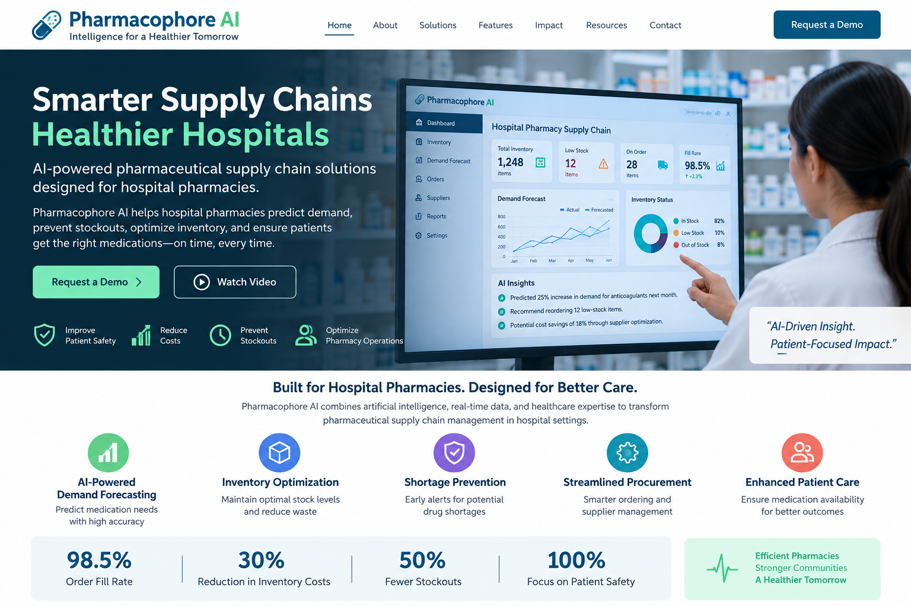

AI Demand Forecasting
Estimate future medication needs using historical utilization and operational patterns.
AI FOR HOSPITAL PHARMACY OPERATIONS
AI-powered pharmaceutical supply-chain intelligence designed for hospital pharmacies.
Forecast medication demand, identify inventory risks, streamline procurement, and support safer pharmacy operations with one connected platform.

BUILT FOR HOSPITAL PHARMACIES
Pharmacophore AI connects pharmacy operations, supply-chain data, and predictive intelligence.
Estimate future medication needs using historical utilization and operational patterns.
Monitor stock levels, reorder points, expiry exposure, and inventory risk.
Surface low-stock and supply-risk signals before they disrupt pharmacy operations.
Support smarter purchasing decisions and supplier performance analysis.
PLATFORM FEATURES
One view of stock, low-stock items, on-order quantities, and risk indicators.
Translate pharmacy utilization patterns into forward-looking planning signals.
Prioritize actions such as reorder review, shortage attention, and supplier follow-up.
Track operational KPIs for pharmacy leadership and supply-chain teams.
Review 12 low-stock items and prioritize critical medications before the next replenishment cycle.
INTERACTIVE PRODUCT DEMO
Illustrative demo data only — not clinical recommendations.
| Medication / Supply | Stock | Risk | Suggested Action |
|---|
INTENDED IMPACT
Earlier visibility into low-stock and demand changes.
Better planning can help manage excess inventory and expiry exposure.
Give supply-chain teams clearer information for purchasing decisions.
Keep pharmacy operations focused on timely medication availability.
ABOUT PHARMACOPHORE AI
Pharmacophore AI is envisioned as a healthcare technology platform focused on pharmaceutical supply-chain management in hospital pharmacy settings.
Its purpose is to connect frontline pharmacy knowledge with analytics, automation, and AI so pharmacy and supply-chain teams can make more informed operational decisions.
This website is a product prototype. It does not provide medical advice, prescribe medications, or replace pharmacist or clinician judgment.
See how Pharmacophore AI could fit your pharmacy operation.
Tell us about your hospital pharmacy and we’ll prepare a product walkthrough.